高加索人並非皆為金髮碧眼：從體質骨相、地緣演化到影視神話的「黑髮白人」視覺除錯報告
目錄
前言
受到好萊塢商業電影、納粹種族偽科學 ，以及大量日系動畫與電子遊戲 的人設簡化策略影響，許多人至今仍對高加索人（白色人種）抱持著根深蒂固的刻板印象——認為他們「理所當然」都該是金髮碧眼。
但事實上，在真實世界的體質人類學光譜中，尤其是在南歐地中海沿岸、巴爾幹半島、東歐平原、高加索山脈以南的中東與西亞，黑髮、深褐髮、茶褐色瞳孔與深邃黑色眼睛的高加索人，在人口比例上反而佔據了絕對多數 。
當我們穿透流行文化與二次元的人設迷思，從全球影視文本、神怪改編到演化生物學時，會看到一連串清晰的視覺事實：
黑髮白人的霸主地位： 從西方哥德始祖德古拉、十九世紀白雪公主的「烏木黑髮」，到現代超英巨作的鋼鐵人與蝙蝠俠，黑髮高加索始終是莊嚴、神秘與強大力量的核心符號。底層代碼與視覺擬態的解耦： 德古拉代表了巴爾幹的地緣突變，神力女超人映射了地中海古典骨相，超人展現了外星跨物種擬態，而《尖叫旅社》則揭示了獨立奇幻種族對高加索黑髮 UI 的牢固錨定。骨骼架構顛覆「膚色標籤」： 長年生活在強光下的地中海與中東高加索人常有小麥古銅膚色，而數十位東亞特攝明星則擁有極致白皙的皮膚；這證明了五官骨骼才是人種本質，膚色從不是劃分族群的絕對方式。
本書面報告將從各類經典影視、文學文本與體質人類學出發，逐一拆解這場關於高加索人的「金髮碧眼迷思」。
以《暮光之城》的黑髮人物為例
這種多樣性在近代暢銷影視文本中展露無遺。以全球現象級 IP《暮光之城》為例，卡倫家族（Cullen Family）的成員 Emmett Cullen 與 Alice Cullen 皆為黑髮設定；而掌控吸血鬼世界的佛杜里家族（Volturi），其決策層與核心護衛更是以黑髮居多，例如長老 Aro 與 Marcus，以及武力天花板的 Felix 與 Alec。
Felix： 雖然沒有讀心或知覺麻痺等超自然異能，但其純粹的肉體力量遠超常規吸血鬼，不到數十秒便能壓制 Edward Cullen（飾演者 Daniel Cudmore 亦在《X戰警》中飾演鋼人）。Alec： 其能力是釋放緩慢擴散的無形感官剝奪霧氣，能精準切斷目標所有的視覺、聽覺與觸覺，將敵人封閉在絕對虛無中任人宰割。
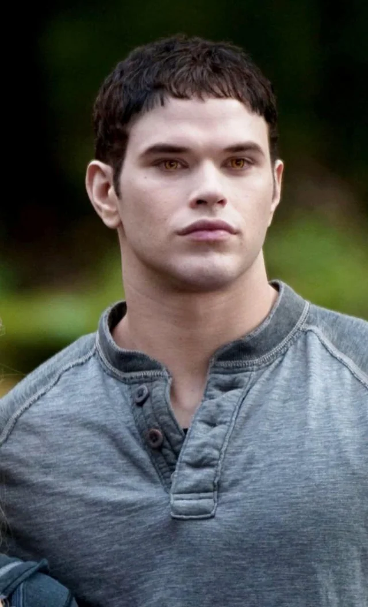
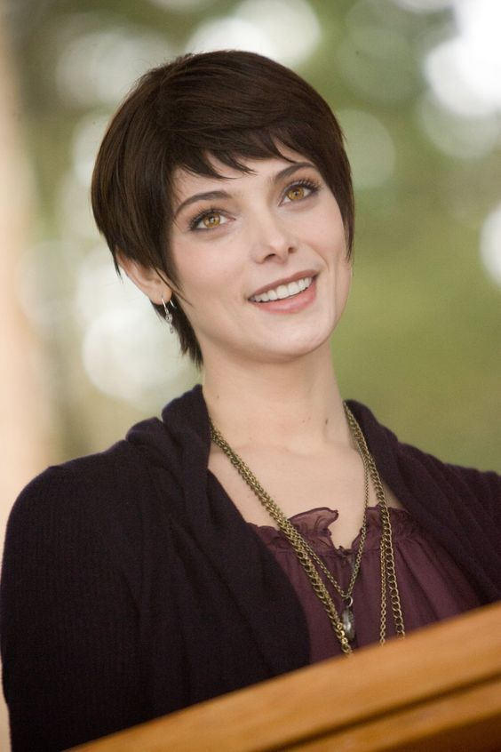
而佛杜里家族中唯一的金髮長老 Caius，其飾演者 Jamie Campbell Bower 本人實際上也是戴上了特製假髮以契合小說描寫。
吸血鬼的眼睛顏色在作品中被賦予了超自然生理規則（黑瞳代表飢餓、紅瞳代表經常飲人血或剛轉化不久、金瞳代表素食）；但回到人類設定中，女主角貝拉（Bella Swan）在身為人類時便是深褐髮（Brunette）搭配深色眼睛，貝拉的父親查理（Charlie Swan）也是典型的深髮深瞳。
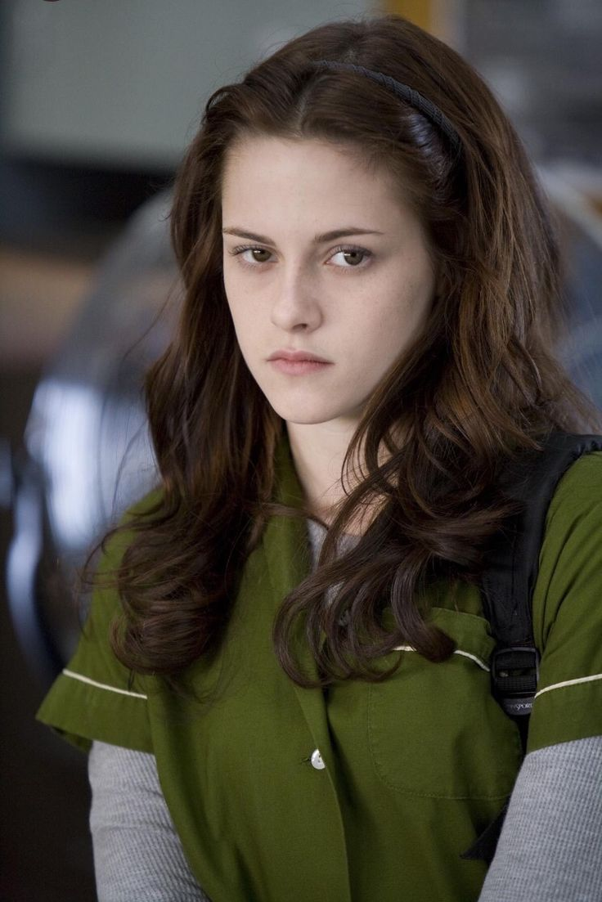
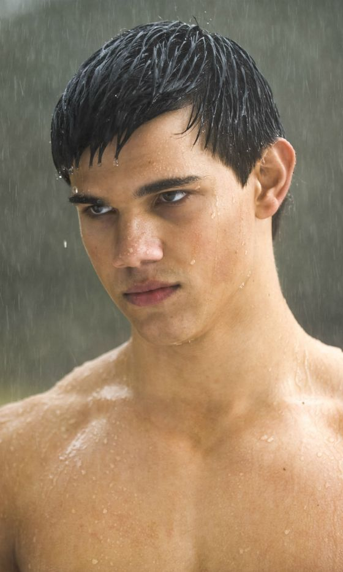
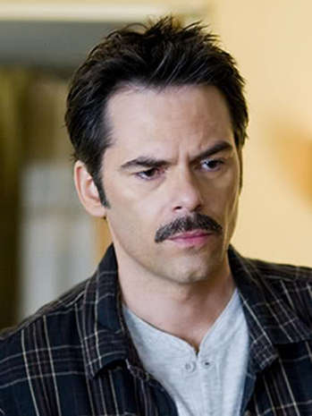
註：飾演貝拉的 Kristen Stewart 為純歐裔高加索人，在鏡頭與光影下呈現深邃的黑褐色髮質；飾演雅各布的 Taylor Lautner 則具備歐裔與美洲原住民混血背景；飾演 Charlie Swan 的 Billy Burke 亦是黑髮黑瞳的高加索人。
事實上，黑髮黑眼的高加索人形象在各類影視作品中早已廣泛出現
超級英雄核心支柱： 漫威電影宇宙（MCU）中的鋼鐵人 Tony Stark（Robert Downey Jr. 飾）、蜘蛛人 Peter Parker（Tom Holland 飾）、酷寒戰士 Bucky Barnes（Sebastian Stan 飾）、綠巨人浩克 Bruce Banner（Mark Ruffalo 飾）、洛基 Loki（Tom Hiddleston 飾），以及 DC 宇宙的蝙蝠俠 Bruce Wayne，全數鎖定黑髮或深棕髮形象。格鬥與動作動作巨作： 《李小龍傳奇》裡的歐美武術家、《葉問》系列中的經典白人對手（如第二集拳擊冠軍 Twister、第四集空手道黑帶教練 Colin Frater、海軍陸戰隊長官 Barton Geddes），皆由深髮白人武術演員出演。遊戲神作主角： 全球銷量霸主《俠盜獵車手 V》（GTA 5）的兩大核心主角 Michael De Santa 與 Trevor Philips，均為典型的深色毛髮白人中年男子。
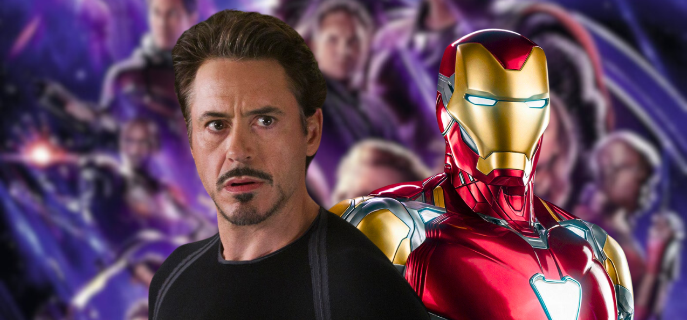
▲ 漫威電影宇宙（MCU）鋼鐵人 Tony Stark（Robert Downey Jr. 飾）：標誌性黑髮與修整鬍鬚，奠定科技巨頭莊嚴霸氣形象
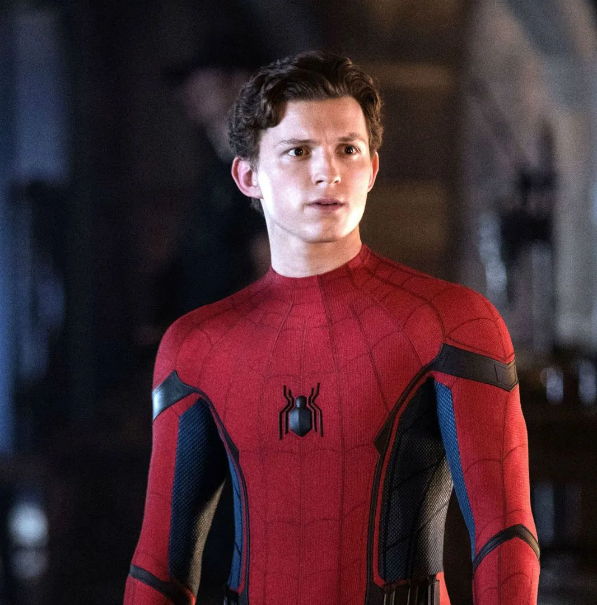
▲ 漫威英雄 蜘蛛人 Peter Parker（Tom Holland 飾）：貼合美漫原作中鄰家少年常見的原生深棕黑髮
▲ 酷寒戰士 Bucky Barnes（Sebastian Stan 飾，羅馬尼亞裔演員）：冷冽黑髮與東歐高加索深刻輪廓完美貼合
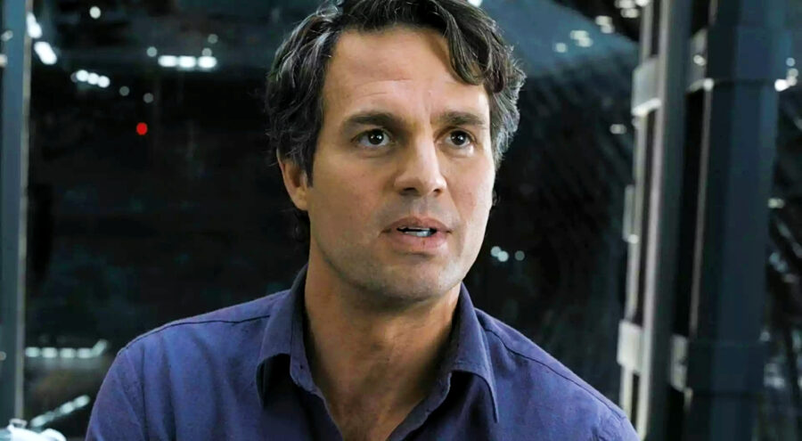
▲ 綠巨人浩克 Bruce Banner 博士（Mark Ruffalo 飾，義大利高加索血統）：經典自然深黑捲髮
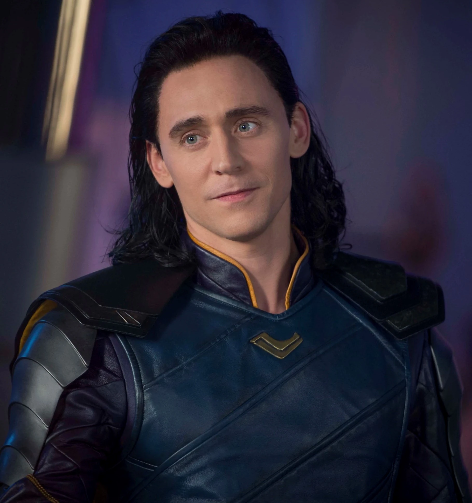
▲ 惡作劇之神 洛基 Loki（Tom Hiddleston 飾）：漆黑及肩長髮映襯蒼白膚質，彰顯古典北歐神話中的詭譎神聖感
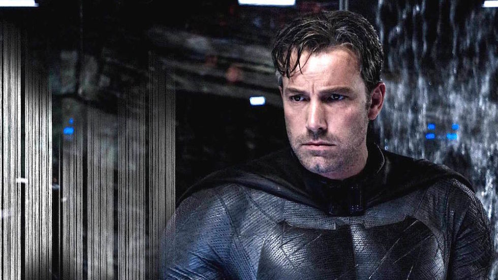
▲ DC 宇宙核心 蝙蝠俠 Bruce Wayne（Christian Bale 飾）：高譚市億萬富豪與黑暗騎士標誌性的深黑油頭
VIDEO
VIDEO
VIDEO
VIDEO
VIDEO
VIDEO
VIDEO
VIDEO
VIDEO
甚至在英國全民喜劇中，舉世聞名的豆豆先生（Mr. Bean，Rowan Atkinson 飾）也是最純正的黑髮白人形象。
VIDEO
德古拉（Dracula）：影視史上最標誌性的黑髮高加索霸主
在西方哥德式文學與恐怖電影百年史中，「深黑後梳髮型（Slicked-back Black Hair）」已成為德古拉不可撼動的視覺代碼。無論是冷酷貴族、悲劇戰士，還是現代解構甚至親子喜劇，黑髮特徵都被高度保留：
《德古拉 2000》： Gerard Butler 飾演的德古拉狂野邪魅，劇中設定其原身為背叛耶穌的門徒「猶大」，完美契合了黎凡特中東高加索的黑髮背景。《刀鋒戰士 3》： Dominic Purcell 飾演的始祖德古拉剛毅壯碩，黑色短髮展現遠古戰士的純粹暴力。《凡赫辛》： Richard Roxburgh 飾演的德古拉高瘦優雅，披散黑髮散發經典巴爾幹貴族氣場。《德古拉：未知之祖》： Luke Evans 飾演穿梭戰場的悲情英雄弗拉德三世，黑色披甲與黑髮融為一體。BBC / Netflix 影集《德古拉》： 丹麥演員 Claes Bang 完美重現了狡黠、優雅且壓迫感十足的黑髮紳士形象。港劇《殭屍道長》： 演員李道洪飾演的西洋吸血鬼告魯斯（即德古拉），即便由東亞面孔演繹，其黑髮披風與西洋燕尾服的結合依然高度契合，展現出該符號的跨文化包容力。《吸血鬼特助：雷菲爾》： 尼可拉斯·凱吉（Nicolas Cage）致敬 1931 年貝拉·路格西的黑髮油頭，以黑色幽默解構自戀狂上司。《惡魔城》動畫與《Hellsing》： 無論是 McTavish 配音的悲劇伯爵，還是平野耕太筆下無敵的黑髮紅衣死神 Alucard，黑髮始終是這項吸血鬼始祖符號的核心視覺基底。《尖叫旅社》（Hotel Transylvania）： 索尼動畫系列中的德古拉公爵（由 Adam Sandler / Brian Hull 配音），即便轉向合家歡動畫喜劇，依然嚴格維持了招牌的亮黑後梳髮型與深色眉睫，成為無數年輕世代對德古拉的第一視覺印記。
VIDEO
VIDEO
VIDEO
VIDEO
VIDEO
VIDEO
VIDEO
VIDEO
VIDEO
VIDEO
4.1 跨文化文本考據：港產片《殭屍道長》中的「告魯斯」即德古拉
在 90 年代港劇巔峰《殭屍道長》中，由李道洪飾演的西洋吸血鬼雖然譯名為「告魯斯（Count Cruz）」，但全劇透過嚴密的情節與台詞，確立了他就是德古拉的本質：
地理與物種源頭： 當香港柯探長向道長毛小方求助時直言：「第一隻西洋殭屍出現在羅馬尼亞。」隨後在森林目擊告魯斯時驚呼：「書上說的西洋殭屍和他一模一樣，就是他！」精準鎖定了德古拉的歷史誕生地特蘭西瓦尼亞。家族名號的音譯對齊： 當毛小方誓言降妖時，告魯斯自豪反嗆：「我偉大的尼古拉家族這幾百年來向來是所向無敵的！」此處「尼古拉（Nikola/Dracula）」正是早期華語影視對德古拉（Dracula）的翻譯變體。經典特徵的完全映射： 怕銀十字架、能化身蝙蝠、能催眠他人、被咬者會屍變傳染——自 1897 年布蘭姆·斯托克小說問世以來的整套「現代吸血鬼專利 UI」，全部完整映射在告魯斯身上。
這正是 90 年代港產影視極具開創性的文化融合手法：將深植於歐洲哥德傳統的黑髮高加索吸血鬼，移植到民國初年的茅山道術體系中，創造出前所未有的東西方法術對抗張力。
VIDEO
VIDEO
VIDEO
VIDEO
VIDEO
VIDEO
4.2 創作邏輯深究：遺傳本質、地緣潛規則、外星擬態與《尖叫旅社》的獨立種族
在角色設計與世界觀建構中，判定一個角色是否為真正的「黑髮高加索人」，必須從資訊架構區分**「底層代碼（Genetic Base Class）」**與**「渲染介面（Rendered UI）」**：
德古拉與神力女超人：穩定的地緣遺傳本質 狀態突變（State Mutation） ，其底層遺傳本質始終是高加索人；而神力女超人由以色列演員蓋爾·加朵飾演毫無違和感，正是因為兩人具備地中海高加索的同源骨骼幾何。
VIDEO
超人（Superman）：跨物種的「純視覺擬態」 類型不匹配（Type Mismatch）： 超人本質是氪星外星生物（Kryptonian）。他的黑髮白人外貌並非地球演化產物，而是一種擬態；但好萊塢長期選用黑髮高加索男演員（包括薩德將軍與 Faora UI），證明了商業影視在塑造神聖超凡力量時，極度依賴黑髮白人的莊嚴感，而非單一的金髮碧眼。
▲ 超人 Kal-El / Clark Kent（Henry Cavill 飾）：外星氪星生物擬態，好萊塢嚴格鎖定黑髮、深眸與高加索陽剛下顎線條
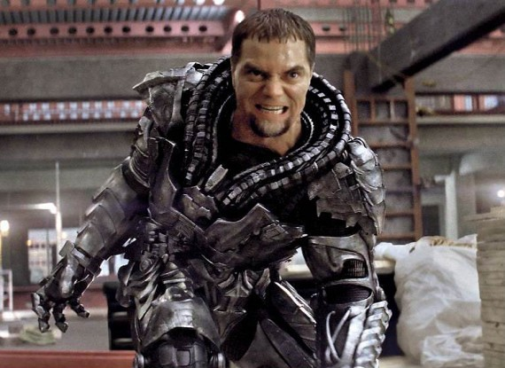
▲ 氪星最高軍事統帥 薩德將軍（Michael Shannon 飾）：深黑平頭與深邃眉弓，展現氪星戰士純粹冷酷的威嚴
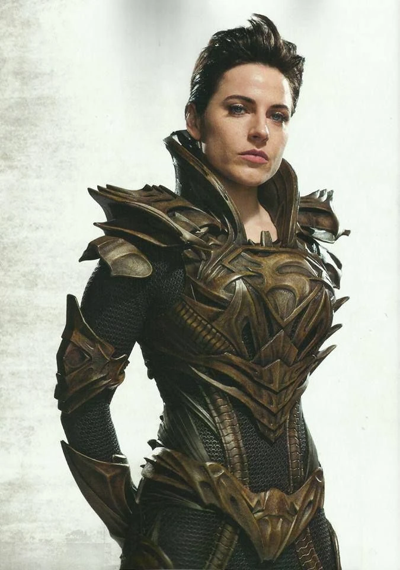
▲ 薩德副官 Faora-Ul（德國演員 Antje Traue 飾）：俐落黑短髮搭配凌厲高加索骨相，在《超人：鋼鐵英雄》中展現非凡體術壓迫感
VIDEO
《尖叫旅社》的深層啟發：天生獨立種族的「高加索視覺錨定」
並非人類變異，而是天生物種： 劇中德古拉的父親 Vlad 同樣是吸血鬼，家族擁有明確的血脈世系，吸血鬼在生理上具備繁衍後代的能力（如 Mavis 與人類 Jonathan 生下混血兒 Dennis）。這說明在該世界觀裡，吸血鬼並非後天感染者，而是與超人相似的「非人類獨立物種（Inherent Species）」 。生物本能與情感的跨物種兼容： 儘管身為獨立物種，他們卻依然能與人類透過荷爾蒙彼此強烈吸引（即劇中的「Zing」心動共鳴），並成功繁衍後代，展現了高度的生理相容性。始終如一的高加索視覺封裝： 最耐人尋味的是，即便編劇將其重構為天生異族，其外觀模型依然毫不動搖地以布拉姆·斯托克筆下的東歐高加索人為核心模板——高挺狹窄的鼻樑、銳利深邃的眉骨、以及標誌性的深黑後梳髮型。這再度證明：無論角色是突變人類、擬態外星人、還是奇幻獨立種族，在西方頂級視覺文化中，黑髮高加索形象始終是表現神秘、高貴與強大魅力的不可替代基底。
※ 系統架構結論：真正的體質人類學判定應查詢底層資料庫的演化源頭，而非僅讀取表層像素。德古拉無論在歷史現實、後天變異、港式道法對決，抑或《尖叫旅社》的獨立天生種族架構中，都始終維繫著「黑髮高加索」的最高視覺權重。
典型的黑髮高加索人：以哈利·波特為例
在風靡全球的英國奇幻文學《哈利·波特》中，J.K. 羅琳將主角哈利明確設定為「一頭凌亂黑髮與明亮綠眼」。這項特徵精確體現了大不列顛群島古老凱爾特人與盎格魯-撒克遜人融合後的真實多樣性——黑髮並非外來基因，而是英國本土高加索青少年的常見常態。
VIDEO
在該系列作品中，西弗勒斯·石內普（Severus Snape）、詹姆·波特（James Potter）、小天狼星布萊克（Sirius Black）、達利·德斯禮（Dudley Dursley）等核心角色亦清一色為深黑毛髮。
VIDEO
▲ 電影《哈利·波特：神秘的魔法石》：丹尼爾·雷德克里夫（Daniel Radcliffe）飾演的哈利·波特，忠實呈現小說原著中大不列顛本土高加索男童標誌性的凌亂深黑髮質
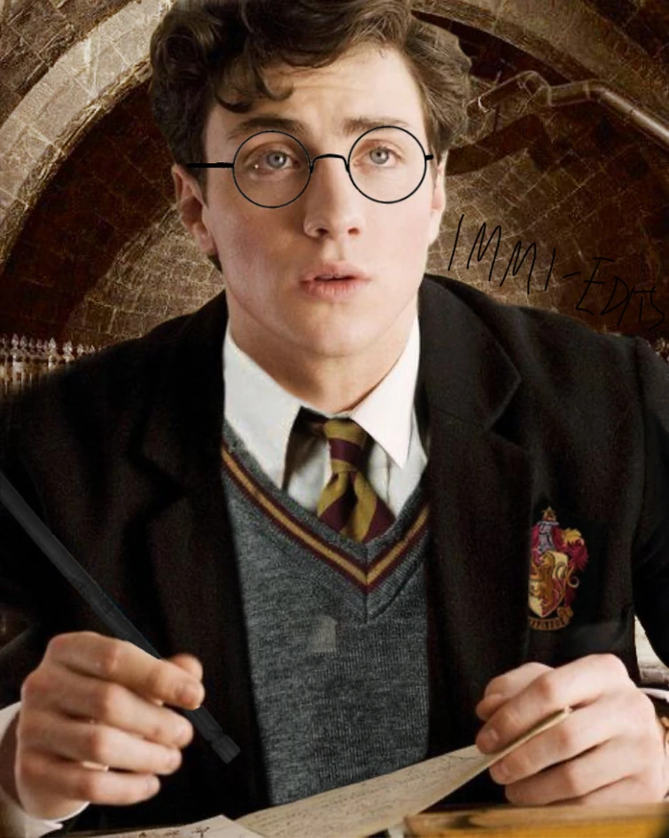
▲ 詹姆·波特（James Potter）：波特家族代代相傳的倔強純黑髮絲，在不列顛群島魔法世系中代表著深厚的本土古老純血血統
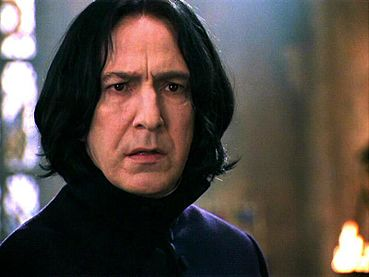
▲ 魔藥學教授 西弗勒斯·石內普（Alan Rickman 飾）：及肩油膩黑髮與深陷眼窩、高聳鷹鉤鼻，構成了西方文學中最深邃迷人的黑髮高加索悲情大師形象
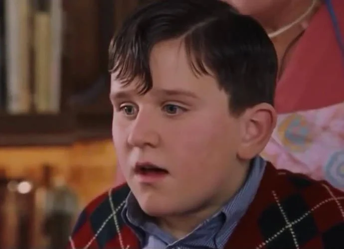
▲ 麻瓜表哥 達利·德斯禮（Harry Melling 飾）：作為完全不帶魔法基因的普通英國麻瓜家庭，德斯禮一家同樣具備道地英國本土常見的深黑毛髮特徵
白雪公主：十九世紀歐洲對「烏木黑髮」的頂級審美
格林童話經典《白雪公主》（Snow White）的原著開篇即奠定了德語區傳統的最高美學標準：「皮膚如雪、雙唇如血、頭髮黑如烏木（Ebony Wood） 」。
在十九世紀的歐洲浪漫主義審美中，極致蒼白的象牙膚色與深邃純黑的髮絲所產生的強烈明暗反差（Chiaroscuro），被視為純潔、神聖與貴族氣質的極致展現。這項童話原型本身就是黑髮高加索女性美學的傳世豐碑。
VIDEO
高加索人種的真實地理光譜：從南歐、中東到北印度
現代體質人類學所定義的「高加索人種（Caucasoid）」，其地理版圖遠非侷限於西北歐一隅，而是橫跨：
南歐地中海區： 義大利、西班牙、葡萄牙、希臘。西亞與中東腹地： 以色列、伊朗、阿拉伯半島、土耳其、亞美尼亞、亞塞拜然。南亞印歐語群： 印度（旁遮普、克什米爾、北方邦等雅利安後裔）。中國西部走廊： 塔吉克族、塔塔爾族等具備高加索骨相特徵的少數族群。
▲ 紀實短片一：伊朗波斯人的體質人類學實證——作為古雅利安印歐語系核心原鄉，伊朗人群具備標準高加索深邃骨相與黑髮濃眉
▲ 紀實短片二：阿拉伯半島人群的族群分類真相——屬於閃米特高加索支系，美國人口普查局（OMB）與國際人類學長年將其法定歸納為白色人種
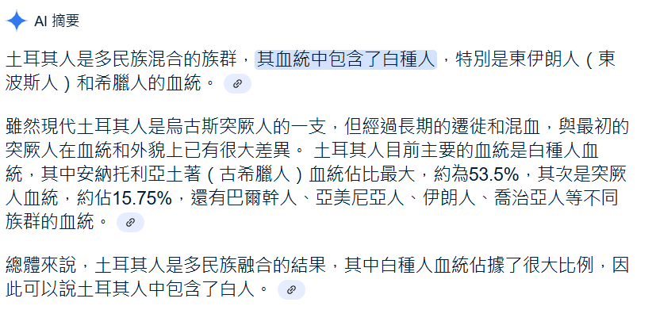
▲ 考據圖表一：土耳其地緣人種分析——安納托利亞高原歷史上的歐亞融合，以典型地中海型高加索立體骨骼為主體
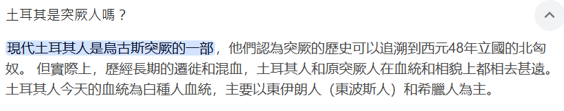
▲ 考據圖表二：土耳其人種歸屬科普文獻——解剖學五官垂直縱深、高鼻梁特徵與歐洲白人同屬廣義高加索範疇
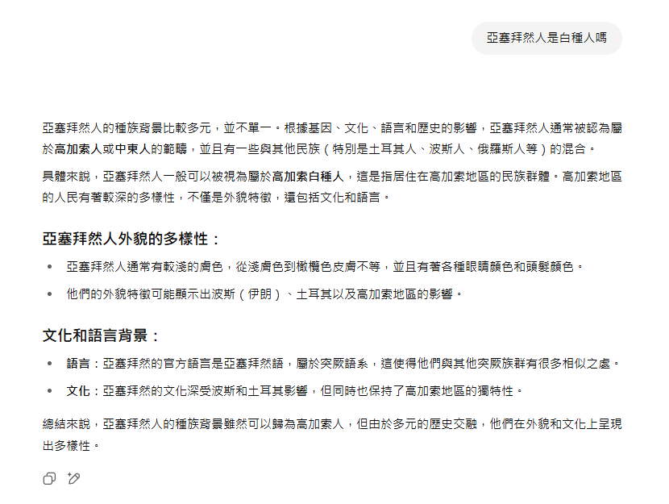
▲ 考據圖表三：高加索南麓原鄉——亞塞拜然人的標準面貌：深色黑髮、濃密眉弓與深邃茶褐色眼眸
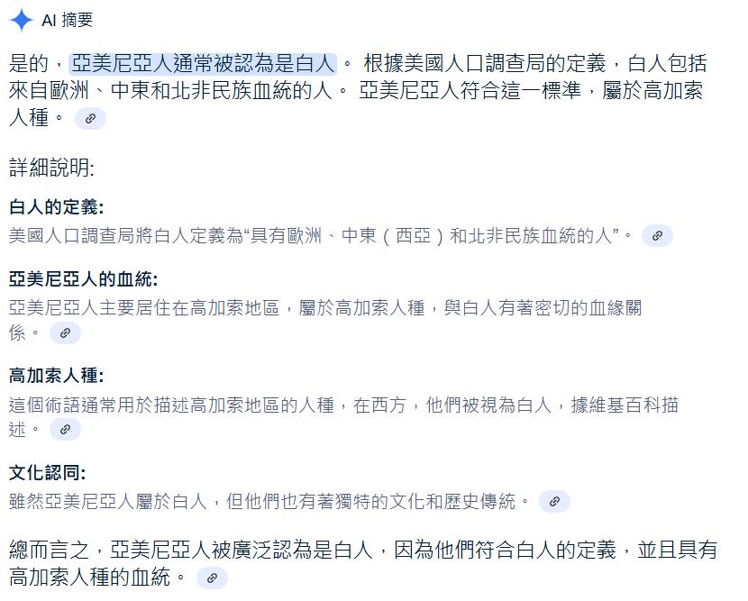
▲ 考據圖表四：傳統體質人類學「亞美尼亞人種（Armenoid）」典型標本——極高而狹窄的鷹鉤鼻樑與平坦後腦（短頭型高加索）
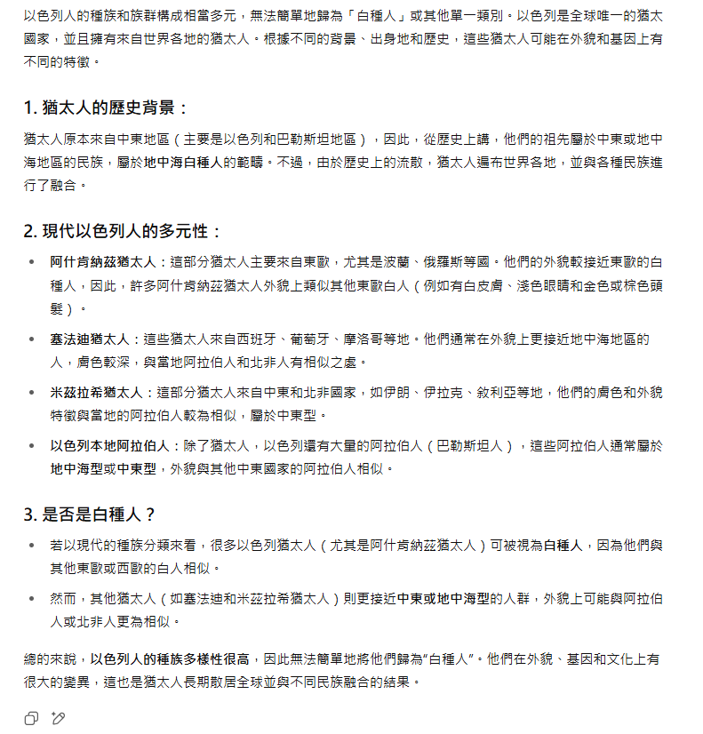
▲ 考據圖表五：以色列黎凡特本土猶太人體質特徵——地中海橄欖膚色、深色毛髮與深邃雙眼，打破好萊塢歐化的刻板印象
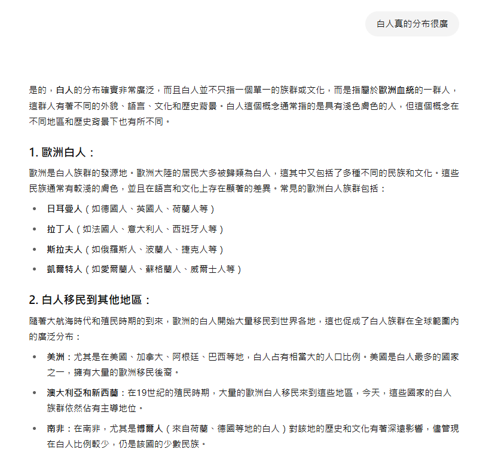
▲ 全球地圖一：傳統體質人類學視角下的「高加索人種（白色人種）」地理邊界，涵蓋全歐洲、北非及整個中東與西亞
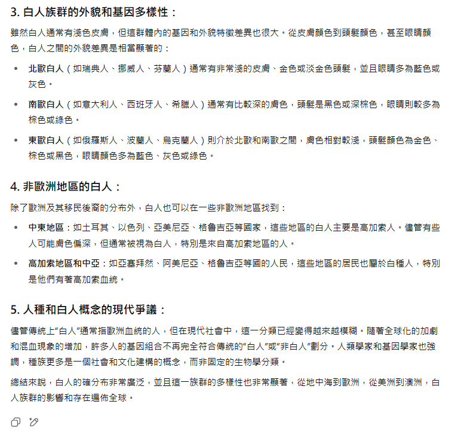
▲ 全球地圖二：現代分子遺傳學古代歐亞基因流向圖——清晰呈現印歐草原基因（Steppe）向南亞與中亞延伸的地緣連續性
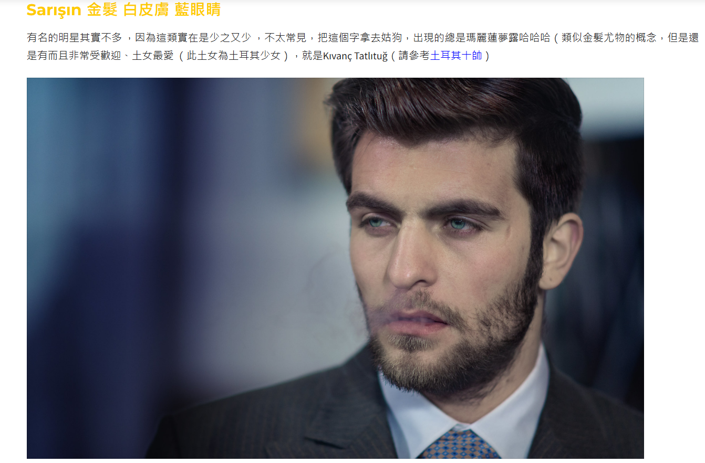
▲ 人像實證：土耳其男性的現代視覺呈現——輪廓立體的高挺鼻骨、自然黑髮與清爽白皙膚質
VIDEO
▲ 中國西部走廊紀錄片一：中國境內高加索骨相實證——打破「中國只有單一黃種人」的視覺迷思，展現帕米爾高原上的古老高加索面相
▲ 中國西部走廊紀錄片二：新疆塔吉克族（Tajiks）族群實證——中國唯一的印歐語系東伊朗語族原住民族，擁有百分之百道地的高加索白種人骨骼與深淺毛髮
▲ 中國西部走廊紀錄片三：新疆塔塔爾族（Tatars）面貌實錄——歷史上經由伏爾加河流域遷徙而來的高加索突厥語群，膚白鼻挺、眼眸深邃
南亞與寶萊塢的殿堂級巨星（如 Aamir Khan、Hrithik Roshan、Deepika Padukone 等），在解剖學與基因系譜上均屬於印歐雅利安高加索支系。他們高挺的鼻樑、深邃的眼窩與濃密的黑睫黑髮，正是古印歐人群在地緣陽光下適應後的真實樣貌。
▲ 南亞人種考證短片一：印度北方法定骨相分析——從骨骼幾何剖析印度印歐語系人群（雅利安支系）為何屬於廣義高加索人種
▲ 南亞人種考證短片二：哈佛遺傳學 ANI/ASI 雙核心模型介紹——論證北印高種姓人群體內攜帶的大量歐亞草原青銅時代牧民基因（Steppe DNA）
▲ 南亞人種考證短片三：打破膚色陷阱——解釋紫外線環境如何讓具備高加索骨相的南亞人群演化出保護性小麥深膚，非非洲黑人（尼格羅）血脈
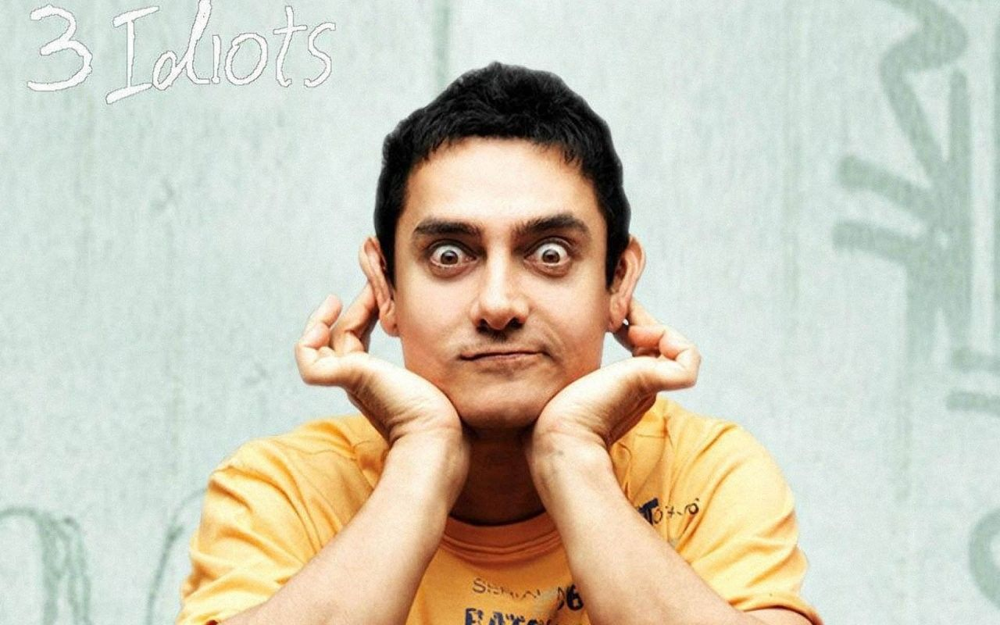
▲ 寶萊塢天王 阿米爾·罕（Aamir Khan）：典型北印度雅利安後裔，具備極致立體的高挺鼻樑、深邃眼窩與天然黑髮，面部骨相極其端正
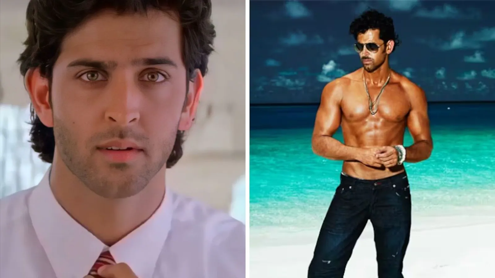
▲ 印度男性面孔代表：高加索長顱骨相與深眼窩幾何，展現印歐雅利安南亞分支的純粹男性陽剛美學
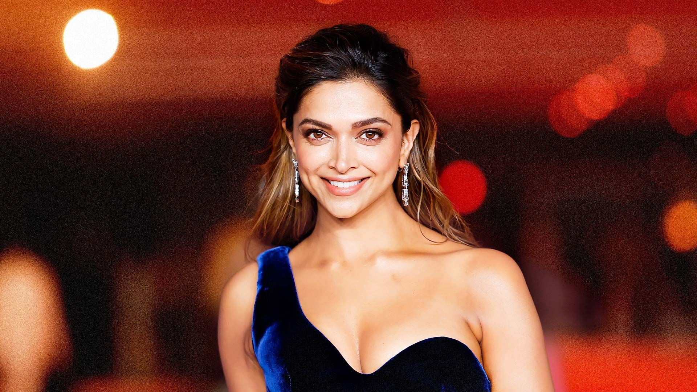
▲ 印度古典女性面孔代表：高聳狹窄的鼻骨與濃密黑捲睫毛，完美示範南亞高加索人在強日照氣候下依然保持的精緻骨骼架構
美劇《魔鬼神探》：以中東高加索人為原型的演繹
在長期的西歐繪畫與世俗影視中，墮天使 Lucifer 常被過度美化為北歐式的金髮碧眼；然而追溯亞伯拉罕一神教的文本源頭，無論是天使抑或惡魔，其神話母體皆深植於中東黎凡特地區。
美劇《魔鬼神探》（Lucifer）由英國男星湯姆·艾利斯（Tom Ellis）飾演路西法，其標誌性的英挺黑髮、深邃瞳孔與修整精緻的鬍渣，反而更自然地契合了黎凡特與地中海古典男性的深邃骨架，成功打破了將神聖或墮落角色單一「雅利安化」的審美惰性。
耶穌（Jesus of Nazareth）的真實歷史相貌
文藝復興時期的歐洲畫家常將耶穌描繪為膚白金髮的西北歐青年，但現代法醫人類學與聖經考古學證實：西元一世紀生活於加利利地區的猶太匠人耶穌，其生理特徵必然具備黎凡特高加索人的典型樣貌——橄欖小麥肌、濃密捲曲的黑髮、深褐色瞳孔與結實粗獷的戶外骨骼。
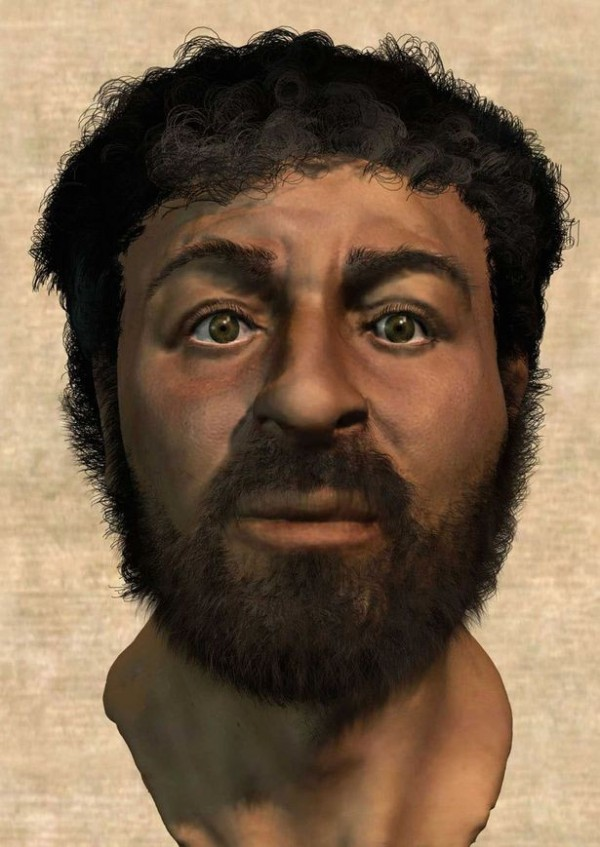
▲ 法醫人類學家與 BBC 團隊模擬之一世紀黎凡特猶太男性面孔
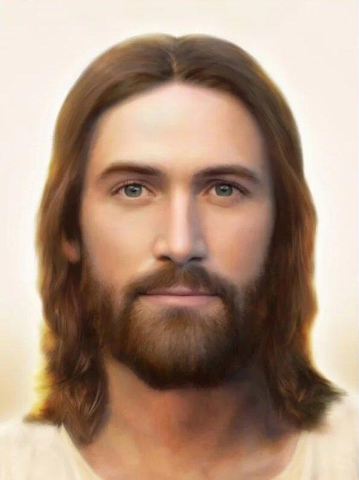
▲ 歐洲文藝復興時期被高度日耳曼化的傳統耶穌畫像
膚色並不是區分高加索人與蒙古人的方式
在體質人類學與演化生物學中，膚色從來不是區分「高加索人（白色人種）」與「蒙古人種（東亞人群）」的根本依據 。膚色深淺本質上是人體為了應對特定地理環境紫外線（UV）強弱所產生的適應性調節，屬於易變的「外層 UI 像素」；而真正決定人種歸屬的，是歷經數萬年地緣隔離所固定下來的顱面骨骼幾何（Craniofacial Architecture）、眼眶縱深、鼻根點高度以及面部扁平度等「解剖學硬代碼」 。
舉例來說，長年生活在地中海強日照地帶（如義大利南部、希臘、西班牙）或美洲低緯度地區的高加索人，常因戶外日曬而呈現深褐色、金黃色或古銅色肌膚，但其高聳的鼻骨、深陷的眼窩以及狹窄立體的面部結構，依然是標準的高加索特徵。反觀生活於中高緯度與季風氣候區的中國東北、華北、南韓與日本等東亞人群，因冬季漫長且室內避光，其原生膚色普遍極其白皙、甚至達到冷白或象牙白質地，但其寬顴骨、平緩鼻根、內眥贅皮（蒙古褶）等特徵，在解剖骨骼上依然是道道地地的東亞形態。
以下盤點兩岸三地與日本影視圈（特別是特攝英雄劇《鎧甲勇士》、《假面騎士》、《超級戰隊》、《超人力霸王》等作品）中大量極具代表性的演員與藝人。他們在鏡頭前皆擁有極度白皙通透的皮膚 ，但在五官骨相上依然具備清晰優雅的東亞面孔特徵，徹底粉碎了西方偽科學將東亞人一刀切為「黃皮膚」的粗暴刻板標籤：
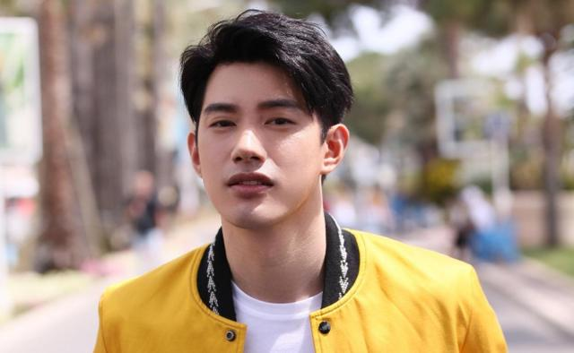
▲ 中國演員 吳建飛（《鎧甲勇士光影傳奇》飾演炎龍俠·李炘南，膚色白皙俊朗）
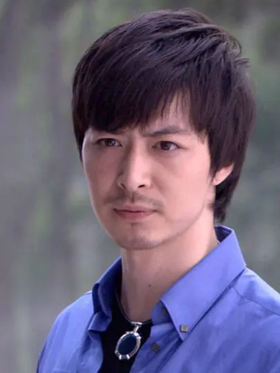
▲ 中國演員 郭帥（《鎧甲勇士光影傳奇》飾演風鷹俠·東杉）
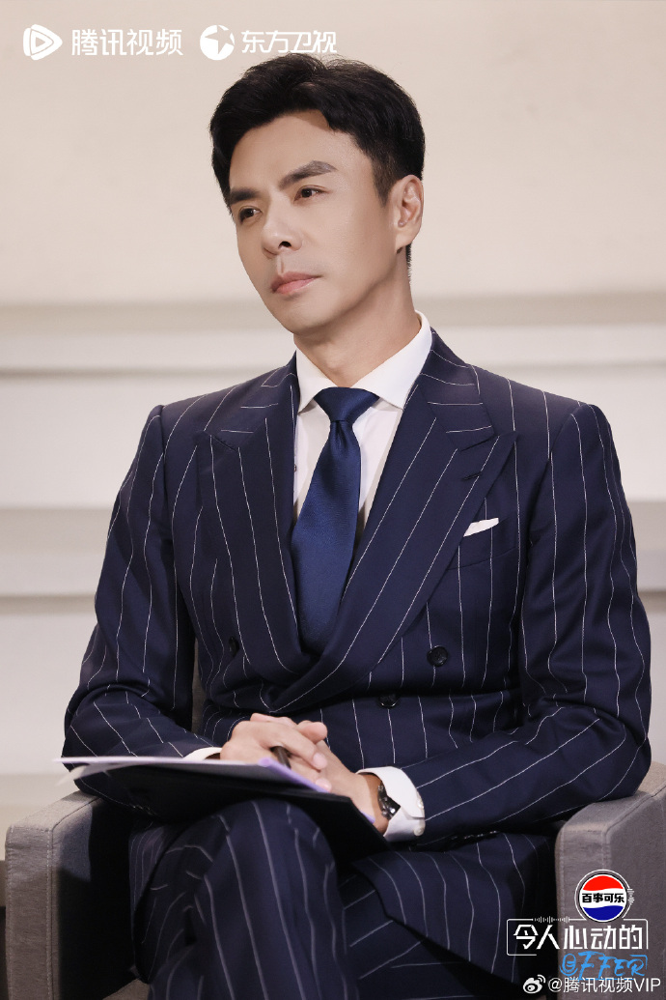
▲ 中國演員兼主持人 柏栩栩（《鎧甲勇士光影傳奇》飾演黑犀俠·北淼，氣質冷峻白淨）
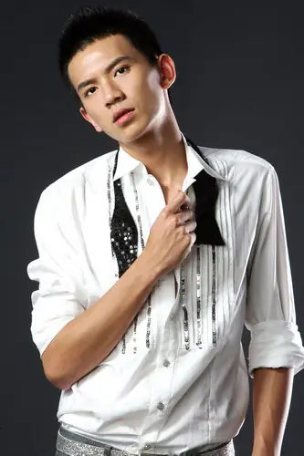
▲ 中國演員 秦炎仕（《鎧甲勇士光影傳奇》飾演地虎俠·坤中）
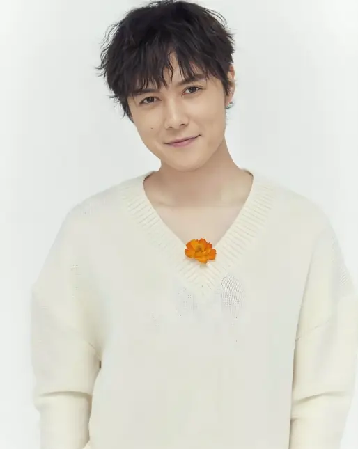
▲ 中國演員 張超（《鎧甲勇士光影傳奇》飾演雪獒俠·西釗，五官精緻且膚質極其白皙）
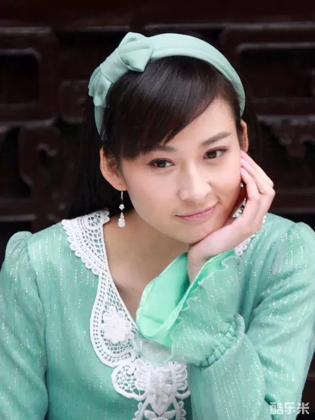
▲ 中國女演員 楊亞（《鎧甲勇士光影傳奇》飾演美真，為ERP研究室的指揮官）
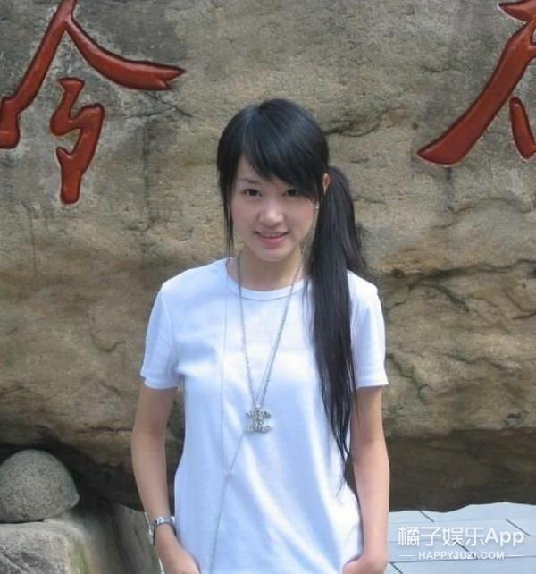
▲ 中國女藝人 盧潔雲（《鎧甲勇士光影傳奇》飾演吳敏慈，氣質溫婉通透）
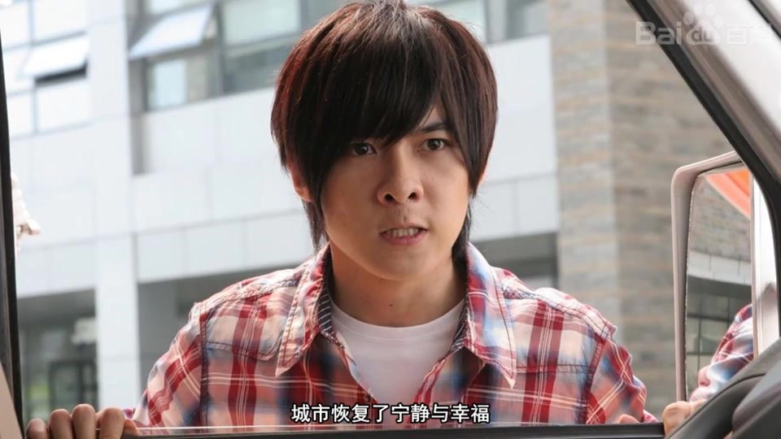
▲ 台灣男藝人 唐禹哲（《鎧甲勇士之帝皇俠》飾演黎子陽，為帝皇鎧甲之召喚人）
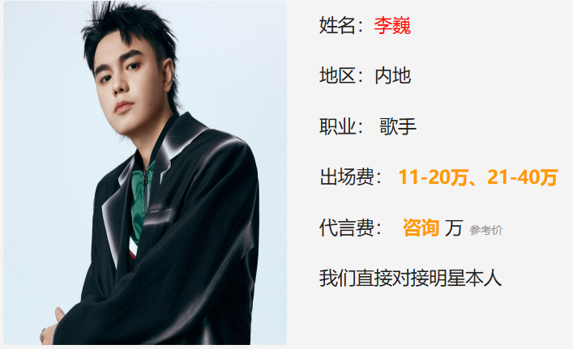
▲ 中國男演員 李巍（《鎧甲勇士刑天》飾演李昊天）
▲ 中國男演員 吳昊澤（《鎧甲勇士刑天》飾演徐霆飛）
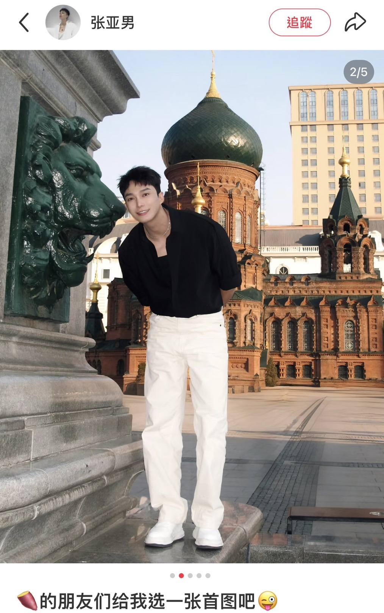
▲ 中國男演員 張亞男（《鎧甲勇士刑天》飾演吳剛）
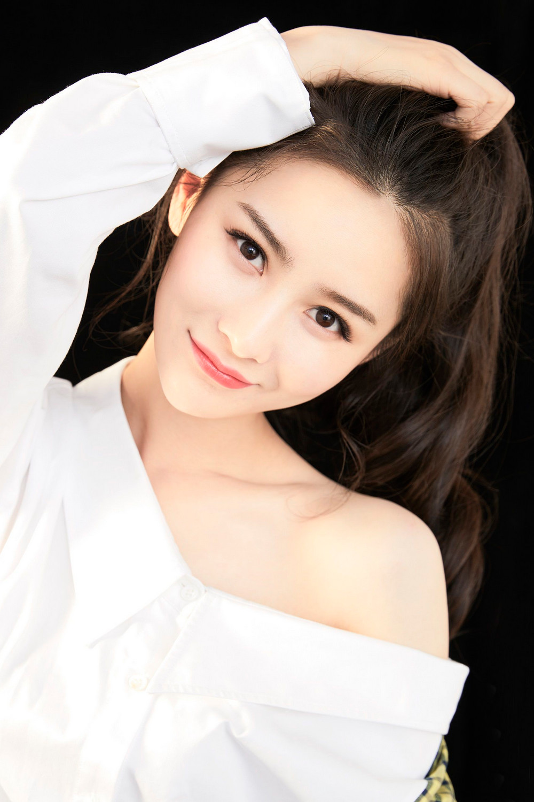
▲ 中國女演員 張維娜（《鎧甲勇士刑天》飾演楊歡迎，膚質白皙透亮）
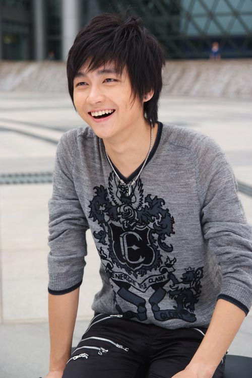
▲ 中國男演員 沈人杰（《鎧甲勇士刑天》飾演安迷修）
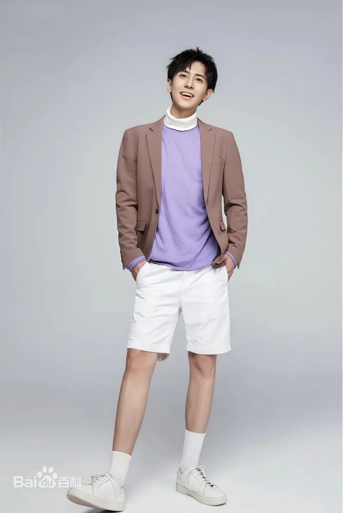
▲ 中國男演員 龔小鈞（《鎧甲勇士刑天》飾演喬奢費）
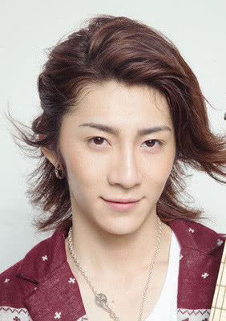
▲ 中國男演員 許峰（《鎧甲勇士拿瓦》飾演端木燕，自然深棕髮搭配白皙膚質）
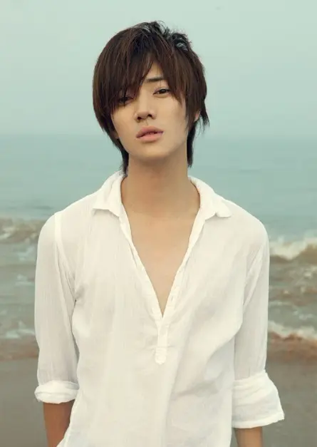
▲ 中國男演員 曾祥程（《鎧甲勇士拿瓦》飾演馬青山）
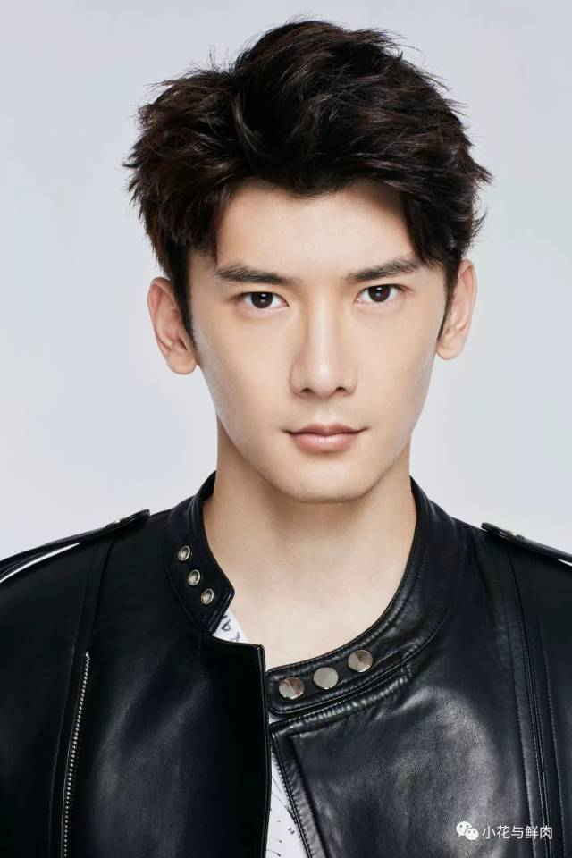
▲ 中國實力派男演員 劉睿麟（《鎧甲勇士拿瓦》飾演馬闊海）
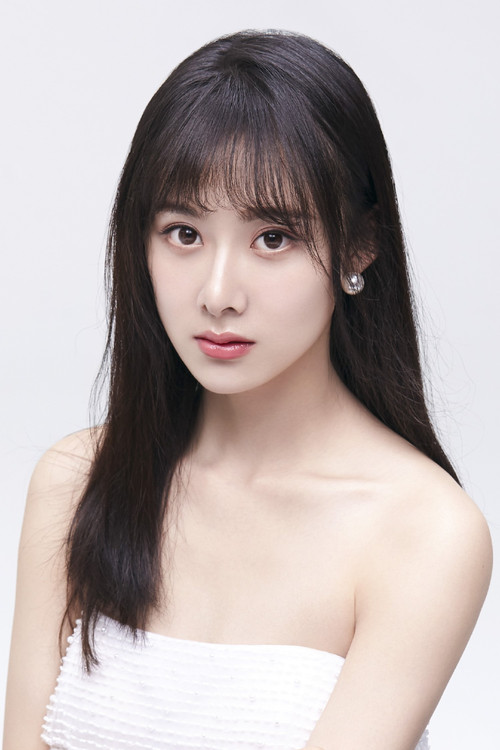
▲ 中國女演員 曹曦月（《鎧甲勇士拿瓦》飾演馬靈靈，膚白貌美的東亞古典氣質）
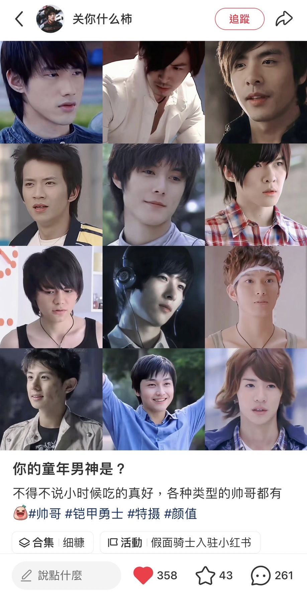
▲ 上方的截圖為鎧甲勇士第一部到第三部的帥哥召喚人和反派的圖片，可以看見他們都好白皙
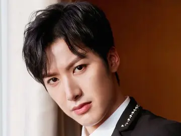
▲ 中國實力男演員 賴藝（《鎧甲勇士捕將》飾演捕王鎧甲·南宮信一，輪廓立體且皮膚白皙）
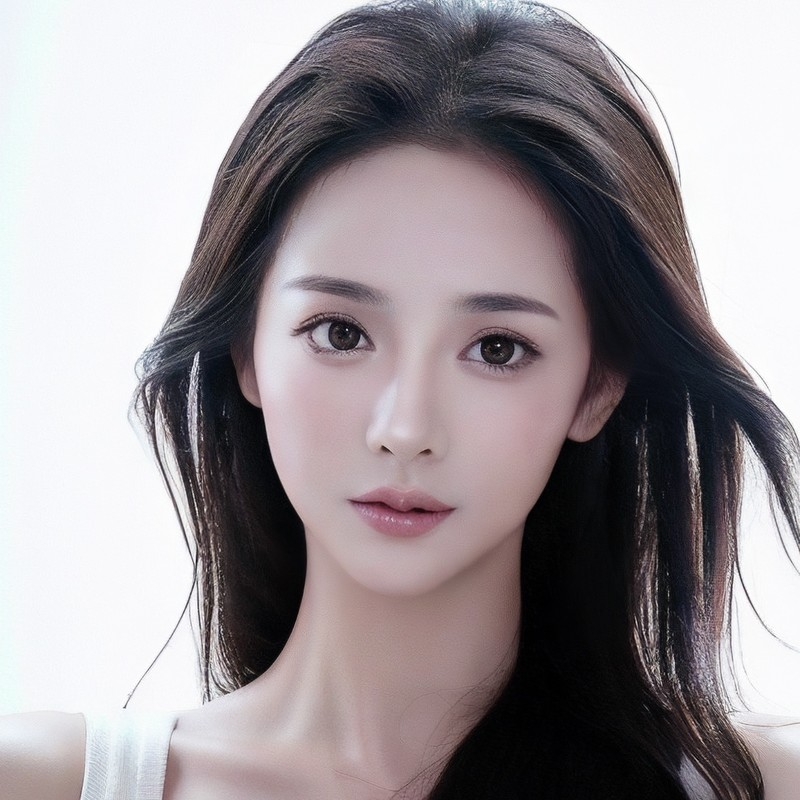
▲ 中國女歌手兼演員 王暢唱（《鎧甲勇士捕將》飾演蘇筱筱）
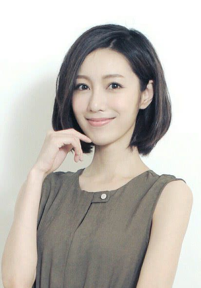
▲ 中國女演員 劉俐嘉（《鎧甲勇士捕將》飾演美君）
▲ 中國男演員 張太文（《鎧甲勇士星曜覺醒》飾演彭天晨）
▲ 中國男演員 陳珂帆（《鎧甲勇士星曜覺醒》飾演萬中行）
▲ 中國女演員 穆夢嬌（《鎧甲勇士星曜覺醒》飾演）
▲ 日本男演員 石黑英雄（《超人力霸王Orb》飾演紅凱，高挑挺拔且膚質通透）
▲ 日本男演員 濱田龍臣（《超人力霸王Geed》飾演朝倉陸）
▲ 日本武術女演員 山本千尋（《超人力霸王Geed》飾演鳥羽來葉，具備極佳武術功底與白皙面容）
▲ 日本男演員 平野宏周（《超人力霸王Z》飾演夏川遙輝）
▲ 日本男演員 寺坂賴我（《超人力霸王Trigger》飾演真中劍悟）
▲ 日本女演員 豐田留妃（《超人力霸王Trigger》飾演靜間結名）
▲ 日本女藝人 加藤岳美（《百獸戰隊》飾演巫女 Tetomu，日本演藝圈膚如凝脂的經典代表）
▲ 日本女藝人 竹內實生（《百獸戰隊》飾演牙吠白·大河冴）
▲ 日本女藝人 長澤奈央（《忍風戰隊》飾演破風藍·野乃七海）
▲ 日本女藝人 山本梓（《忍風戰隊》飾演芙拉畢瓊，東亞極致白皙美女代表）
▲ 日本男演員 富田翔（《爆龍戰隊》飾演三條幸人）
▲ 日本女藝人 伊藤愛子（《爆龍戰隊》飾演樹蘭琉）
▲ 日本男演員 田中幸太朗（《爆龍戰隊》飾演仲代壬琴）
▲ 日本女藝人 木下亞由美（《特搜戰隊》飾演刑事黃·禮紋茉莉花，冷豔白皙代表）
▲ 日本女演員 菊地美香（《特搜戰隊》飾演刑事粉紅·胡堂小梅）
▲ 日本女演員 甲斐麻美（《魔法戰隊魔法連者》飾演魔法藍·小津麗）
▲ 日本女藝人 中村知世（《轟轟戰隊冒險者》飾演冒險黃·間宮菜月）
▲ 日本女演員 末永遙（《轟轟戰隊冒險者》飾演冒險粉紅·西堀櫻）
▲ 日本頂級男演員 松坂桃李（《侍戰隊真劍者》飾演真劍紅·志葉丈瑠，清秀挺拔）
▲ 日本女演員 高梨臨（《侍戰隊真劍者》飾演真劍粉紅·白石茉子）
▲ 日本男演員 千葉雄大（《天裝戰隊護星者》飾演護星紅·艾利斯，以童顏白皙著稱）
▲ 日本女藝人 佐藤里香（《天裝戰隊護星者》飾演護星粉紅·繪里）
▲ 日本實力男星 志尊淳（《烈車戰隊特急者》飾演特急1號·來斗）
▲ 日本殿堂級巨星 小田切讓（《假面騎士空我》飾演五代雄介，深邃東亞骨相與自然白皙特質）
▲ 日本男演員 松田悟志（《假面騎士龍騎》飾演假面騎士夜騎·秋山蓮）
▲ 日本男演員 小田井涼平（《假面騎士龍騎》飾演假面騎士鐵兵·北岡秀一）
▲ 日本女藝人 杉山彩乃（《假面騎士龍騎》飾演神崎優衣）
▲ 日本一線頂級巨星 佐藤健（《假面騎士電王》飾演野上良太郎，細膩白皙的東亞現代美學代表）
▲ 日本女藝人 清水明日香（《超星神》飾演獅堂未加）
▲ 日本寫真女星兼藝人 磯山沙也加（《超星神》飾演早乙女蘭，肌膚粉白水嫩）
▲ 日本女演員 伊藤久美子（《超星神》飾演魚住愛）
▲ 日本女演員 井村空美（《魔彈戰記龍劍道》飾演左京鈴）
高加索人種的色素連續分佈
高加索人種的演化擴散橫跨了地中海、近東平原、阿爾卑斯山區直至北歐低日照地帶。這種劇烈的環境天擇使得高加索群體的色素表現呈現連續光譜：
毛髮： 涵蓋了深黑、栗褐、紅髮（MC1R 突變）、金髮至亞麻白。虹膜： 從高黑色素的深褐、茶黑，到散射形成的琥珀色、綠色、灰色與碧藍色。
全球人種演化選擇與色素適應對比
在傳統人類學刻板印象中，常認為東亞人群（蒙古人種）的外貌高度一致；然而深入遺傳學便會發現，東亞人群內部同樣具有深淺膚色光譜、天然栗棕髮色，以及北亞少數人群的獨立突變。
高加索人種之所以在毛髮與眼色上呈現更為顯眼的斑斕光譜，本質上是高緯度低紫外線選擇壓力下，黑色素調控基因（如 SLC24A5、HERC2/OCA2）歷經多次突變與基因流動的結果。這是一種純粹的中性演化適應，從不代表任何道德或階級上的優越。
深髮、深瞳、古銅膚色高加索人的現代美學吸引力
在當代國際時尚界與好萊塢商業電影中，具備黑髮、深瞳與健康橄欖小麥肌的高加索巨星，早已打破了「白人必須金髮碧眼」的狹隘審美：
以色列國寶演員蓋爾·加朵（Gal Gadot） 以健康的深色調與深邃雙眸，成為當代最具力量感的女性英雄標竿。
寶萊塢巨星迪皮卡·帕度孔（Deepika Padukone） 與卡特莉娜·凱芙（Katrina Kaif） ，以深髮濃眉與神秘大氣的五官，席捲全球時尚伸展台與國際影展。
▲ 以色列演員 蓋爾·加朵（Gal Gadot）：地中海東岸黎凡特高加索人的典型美學代表，一頭濃密黑髮、深邃眉眼搭配健康橄欖小麥肌，展現神力女超人的古典力量美
▲ 寶萊塢天后 迪皮卡·帕度孔（Deepika Padukone）：具備標準印歐雅利安高加索骨相，以大氣高貴的深棕黑髮與深瞳征服坎城影展與路易威登（LV）全球代言
▲ 英印混血天后 卡特莉娜·凱芙（Katrina Kaif）：完美融合英國本土與喀什米爾高加索血統，深色捲髮與精緻立體面龐展現跨文化頂級視覺張力
結語：穿透影視色碼，看見真實的人種多樣性光譜
回顧從好萊塢巨作中的鋼鐵人、蝙蝠俠，到西方哥德史詩中統治黑夜的德古拉；從《哈利·波特》的綠眼黑髮少年，再到港劇《殭屍道長》中告魯斯（德古拉）跨越東西方神魔對決的經典符號，事實早已不言自明：高加索人從未被單一的「金髮碧眼」所綁架，深邃的黑髮與黑瞳，自古以來便是白色人種極具力量感與魅力的重要基底。
解耦 UI 像素與底層遺傳代碼：
打破膚色與人種的刻板枷鎖： 膚色深淺不過是適應紫外線的表層調色劑，五官骨骼幾何才是刻在演化史上的真實標記 。
「白人不必然金髮碧眼，東亞人更不等於蠟黃單一。」
影片背景音樂來源：好想大聲說喜歡你 馬林巴琴模擬器版